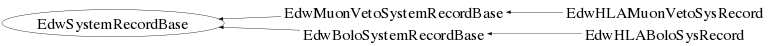

class EdwSystemRecordBase
EdwSystemRecordBase.cc EdwDataStructure Author: Adam Cox <mailto:adam.cox@ik.fzk.de> on 3/25/10. * Copyright 2010 Karlsruhe Institute of Technology. All rights reserved. This is the base class for all System Records
Function Members (Methods)
public:
| EdwSystemRecordBase() | |
| EdwSystemRecordBase(const EdwSystemRecordBase& aRec) | |
| virtual | ~EdwSystemRecordBase() |
| static TClass* | Class() |
| virtual void | Clear(Option_t* opt = "C") |
| virtual void | Compact() |
| Double_t | GetRunEndTime() const |
| Double_t | GetRunStartTime() const |
| virtual TClass* | IsA() const |
| Bool_t | IsSame(const EdwSystemRecordBase& aRec, Bool_t bPrint = false) const |
| Bool_t | IsSystemOn() const |
| Bool_t | operator!=(const EdwSystemRecordBase& aRec) const |
| EdwSystemRecordBase& | operator=(const EdwSystemRecordBase& aRec) |
| Bool_t | operator==(const EdwSystemRecordBase& aRec) const |
| void | SetIsSystemOn(Bool_t a) |
| void | SetRunEndTime(Double_t aNum) |
| void | SetRunStartTime(Double_t aNum) |
| virtual void | ShowMembers(TMemberInspector& insp, char* parent) |
| virtual void | Streamer(TBuffer& b) |
| void | StreamerNVirtual(TBuffer& b) |
private:
| void | CopyLocalMembers(const EdwSystemRecordBase& aRec) |
| void | InitializeMembers() |
Class Charts
{kind=link}
{kind=link}
{kind=link}
{kind=link}

Function documentation
EdwSystemRecordBase(const EdwSystemRecordBase& aRec)
EdwSystemRecordBase(const EdwSystemRecordBase& aRec)
EdwSystemRecordBase& operator=(const EdwSystemRecordBase& aRec)
void CopyLocalMembers(const EdwSystemRecordBase& aRec)
Bool_t IsSame(const EdwSystemRecordBase& aRec, Bool_t bPrint = false) const
Compares two objects and their member variables to test for equality. If bPrint is set to true, then a message for each member variable that is different will print to standard out. Otherwise, this method will return false and quit checking member variables as soon as it finds a unequal data member.